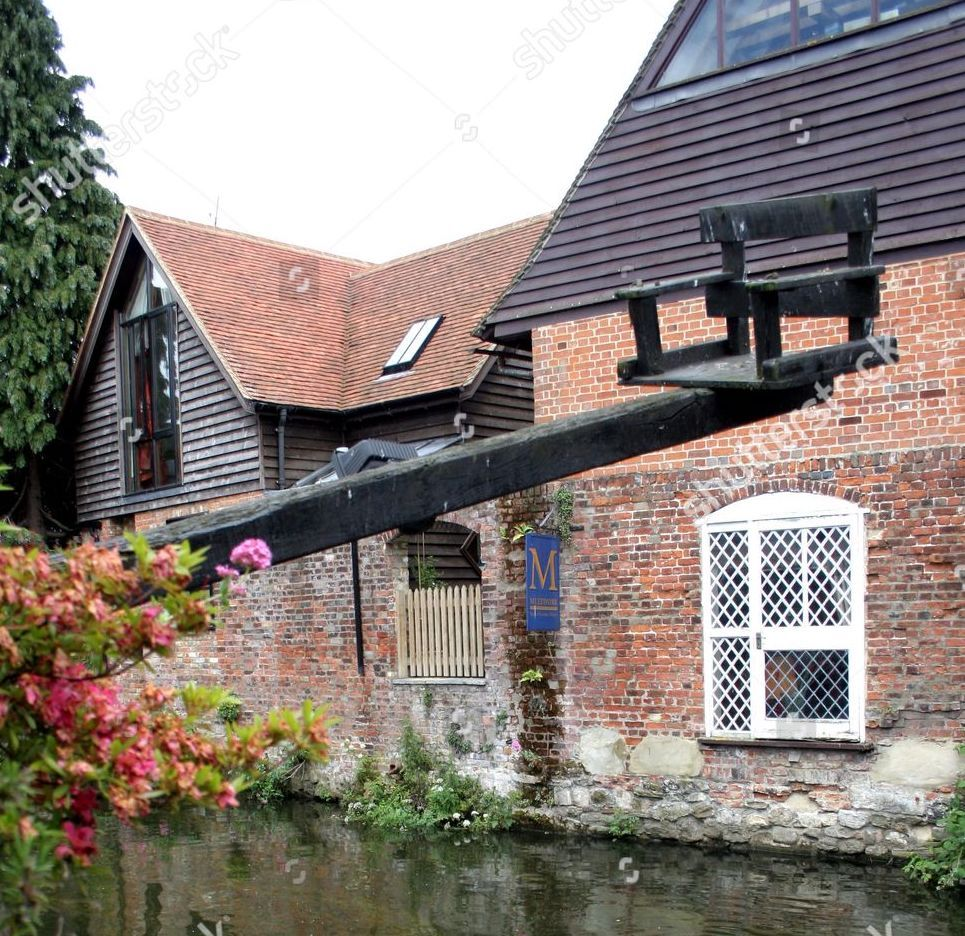

Canterbury, Kent. Located in the South East of England. Known as the "Garden of England"
Canterbury is home to Canterbury Catheral. Below are some facts about Canterbury cathedral:
St Augustine founded the first Cathedral in about 600AD.
The Cathedral was built in stone by the Normans, using creamy white Caen stone imported from France.
Canterbury Cathedral had one of medieval Britain’s first running water supplies.
Archbishop Thomas Becket was murdered in Canterbury Cathedral in 1170. Four knights sliced off the top of his skull, spilling his brains and blood on the floor in the area now known as the Martyrdom.
The Cathedral was nearly completely destroyed in 1174 when sparks set fire to the roof and burnt down the Quire, which was rebuilt as the first Gothic building in England.
Canterbury is also home to the River Stour. On the River Stour is the famous 'Ducking Chair'. It was used to trial suspected witches! They would fasten the suspected witches to these chairs and submerge them under water, if they survived they were a witch! If they didn't, they weren't...

Disobeying the law of physics, jutting out on angle that affects everything from its windows to its trademark slanted door, has made this small bookshop very famous.
Etched into the mantle of this interesting building is a quotation from Charles Dickens' novel David Copperfield.
"A very old house bulging over the road…leaning forward, trying to see who was passing on the narrow pavement below."
Although it looks like it came straight out of one of his novels, the shop was there before his time and actually dates back to the 17th century.
And believe it or not, it wasn't always crooked.